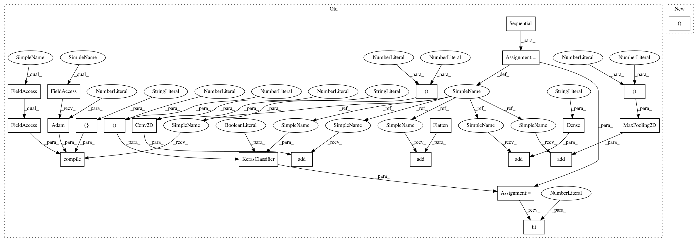

65007a1aebc07f13513f3feab3831a14ed72e732,art/attacks/newtonfool_unittest.py,TestNewtonFool,test_krclassifier,#TestNewtonFool#,125
Before Change
(x_train, y_train), (x_test, _) = self.mnist
// Create simple CNN
model = Sequential()
model.add(Conv2D(4, kernel_size=(5, 5), activation="relu", input_shape=(28, 28, 1)))
model.add(MaxPooling2D(pool_size=(2, 2)))
model.add(Flatten())
model.add(Dense(10, activation="softmax"))
model.compile(loss=keras.losses.categorical_crossentropy, optimizer=keras.optimizers.Adam(lr=0.01),
metrics=["accuracy"])
// Get classifier
krc = KerasClassifier((0, 1), model, use_logits=False)
krc.fit(x_train, y_train, batch_size=BATCH_SIZE, nb_epochs=2)
// Attack
// import time
nf = NewtonFool(krc, max_iter=5)
After Change
:return:
// Build KerasClassifier
krc, sess = get_classifier_kr()
// Get MNIST
(_, _), (x_test, _) = self.mnist
In pattern: SUPERPATTERN
Frequency: 3
Non-data size: 23
Instances
Project Name: IBM/adversarial-robustness-toolbox
Commit Name: 65007a1aebc07f13513f3feab3831a14ed72e732
Time: 2019-02-13
Author: beat.buesser@ie.ibm.com
File Name: art/attacks/newtonfool_unittest.py
Class Name: TestNewtonFool
Method Name: test_krclassifier
Project Name: IBM/adversarial-robustness-toolbox
Commit Name: c0e9a520c944e971b0ea53a9e81142e2e6bbab64
Time: 2019-02-13
Author: beat.buesser@ie.ibm.com
File Name: art/attacks/universal_perturbation_unittest.py
Class Name: TestUniversalPerturbation
Method Name: test_krclassifier
Project Name: IBM/adversarial-robustness-toolbox
Commit Name: 28fb1d4dc48f50a45145de9fe89fa27528e10c8d
Time: 2019-03-06
Author: Maria-Irina.Nicolae@ibm.com
File Name: art/detection/detector_unittest.py
Class Name: TestBinaryInputDetector
Method Name: test_binary_input_detector
Project Name: IBM/adversarial-robustness-toolbox
Commit Name: 65007a1aebc07f13513f3feab3831a14ed72e732
Time: 2019-02-13
Author: beat.buesser@ie.ibm.com
File Name: art/attacks/newtonfool_unittest.py
Class Name: TestNewtonFool
Method Name: test_krclassifier